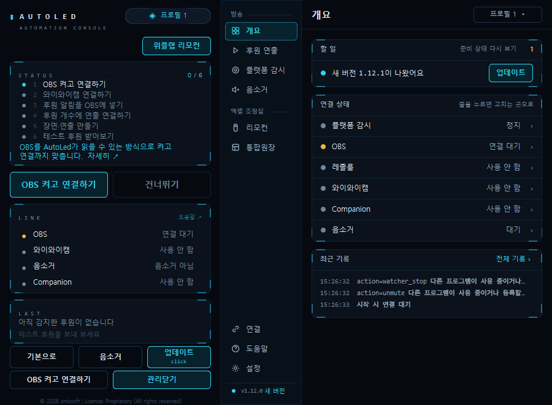
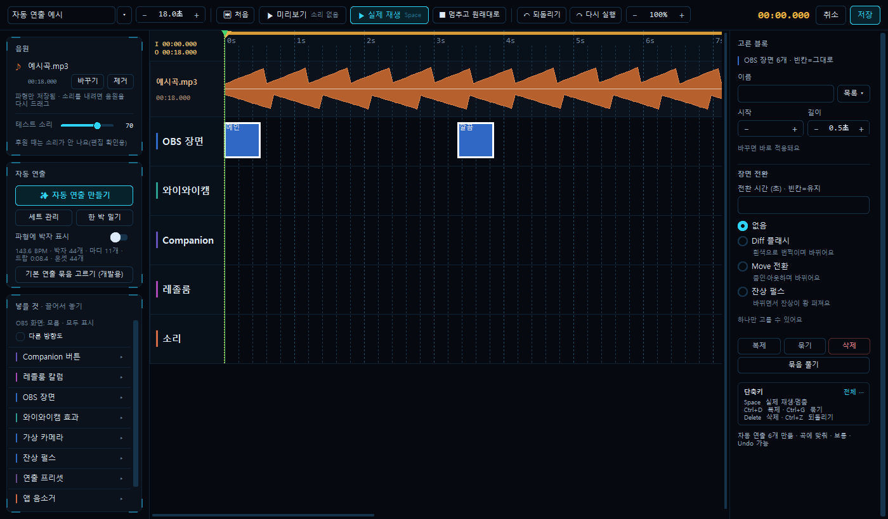
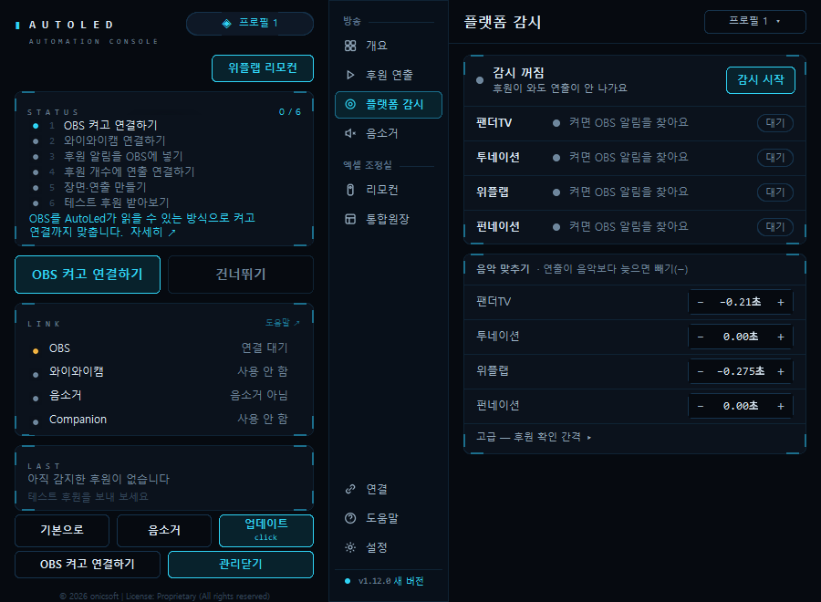
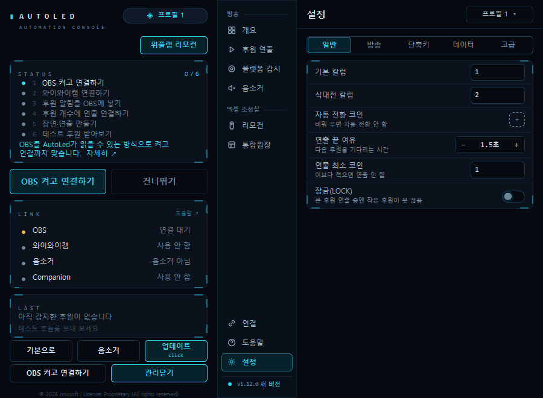

1인 개발자 · 오닉소프트 대표
방송 자동화 제품을 만들고, 팔고, 직접 운영합니다.
기획부터 Windows 앱, 라이선스 서버, 배포와 운영까지 혼자 맡아 실제로 판매하는 제품을 만들었습니다.

- AutoLed 정식 버전
- 1.12.1
- 여기 소개한 저장소의 커밋
- 2,300+
- AutoLed 자동 테스트
- 1,800+
- 소개한 작업의 자동 테스트 합
- 2,000+
2026년 11월 3일 기준. 커밋과 테스트 수는 각 저장소 기록입니다.
AutoLed
후원 알림이 뜨는 순간 방송 연출을 자동으로 실행하고, 끝나면 원래 장면으로 돌려놓는 Windows 앱입니다. 정식 판매하고 업데이트하며 운영 중입니다.
- Python
- Tkinter
- OBS WebSocket
- Resolume OSC
- Bitfocus Companion
- Nuitka
- Inno Setup

문제
후원이 들어올 때마다 방송 중인 사람이 알림을 보고 장면을 바꾸고, 조명과 연출을 손으로 틀어야 했습니다.
만든 것
팬더TV, SOOP, 투네이션, 위플랩, 펀네이션 후원 알림을 감지해 후원 개수에 맞춘 OBS 장면 전환, Resolume LED 칼럼, 조명과 카메라, 배경음악 음소거를 실행합니다. 연출은 시간축 편집기(Timeline)로 직접 짭니다.
결과
버튼을 누르지 않아도 후원이 들어오는 순간 연출이 실행되고 스스로 돌아옵니다. 처음 설치한 사람도 준비 단계 화면만 따라 하면 방송을 시작할 수 있습니다.


그 밖에 만든 것들
칸을 누르면 자세한 설명이 열립니다. 비공개 저장소는 화면과 기능만 소개합니다.
연혁
AutoLed 개발 시작
PDF2Obsidian 공개, AIOS 시작
로그인 서버 운영, AutoLed 정식 배포, 회사 홈페이지
모션그래픽 작업실, 유튜브 채널 시작, 납품 업체 엑셀 장부 자동화
큰손탐지기 서버, 엔터 정산, CCTV 관제, 거래장부 프로그램
AutoLed 1.12.1
각 저장소를 만든 달 기준입니다.
일하는 방식
AI와 나눠서 만듭니다
코드는 Claude Code, Codex 같은 AI 코딩 도구와 함께 씁니다. 무엇을 만들지, 무엇을 공개할지, 언제 내보낼지는 제가 정합니다.
테스트로 확인하고 내보냅니다
자동 테스트를 먼저 통과시키고, 실제 OBS나 실제 서버에서 한 번 더 확인한 뒤 배포합니다. 엔터 정산은 테스트 141개가 계산과 화면 버튼까지 봅니다.
만든 뒤에도 운영합니다
서버를 직접 세우고, 멈추면 다시 켜지고 알림이 오게 둡니다. 백업은 암호화해 매일 받고, 매달 실제로 풀어 보는 복원 연습까지 자동으로 돌립니다.
공개 범위를 나눕니다
제품 소스와 핵심 로직은 비공개 저장소에 둡니다. 고객 정보와 서버 정보는 커밋 기록에도 남기지 않습니다. 이 페이지의 화면도 예시 데이터로 찍었습니다.
주로 쓰는 기술
언어
- Python
- JavaScript
- HTML/CSS
데스크톱 앱
- Tkinter
- PySide6
- Nuitka
- PyInstaller
- Inno Setup
서버
- FastAPI
- Nginx
- Caddy
- systemd
- SQLite
- Ubuntu
방송 · 영상
- OBS WebSocket
- Resolume OSC
- Companion
- three.js
- Blender
- ffmpeg
운영
- GitHub Actions
- Telegram 봇 알림
- fail2ban
- 암호화 백업
함께 일할 자리가 있다면 연락 주세요.
Python 데스크톱 앱, 서버 개발과 운영, 방송·영상 자동화 경험을 살릴 수 있는 일에 관심이 있습니다. 비공개 저장소의 자세한 내용은 면담에서 화면으로 보여 드릴 수 있습니다.